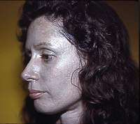

Humans have used and valued silver as far back as 3000 B.C. Continuing on in Greek, Roman, Indian, and Asian cultures as a precious metal, its historical occurrence is prominent (1). Initially valued for its luster, durability and malleability, its other properties soon gave rise to many more uses. The most utile of these is its antibiotic properties coupled with its relative inert effect on human beings. The first medical uses of silver were recorded in 980 AD when a Roman man named Avicenna used silver filings as a blood purifier, for offensive breath, and for palpitations of the heart (2). Soon its medical efficacy as an antibiotic was recognized and used in all manner of silverware, utensils, and coinage to prevent sickness and disease. Its known use as an antibiotic continued on with mariners and westerners in the early expansion of the U.S. who would use silver coins to purify and prolong the life of various liquids(3). In the modern era, however, its uses in public health were temporarily lost with the advent of organic antibiotics. Only in the past couple decades has silver reemerged as the powerful antibiotic as it was long known to be.
Silver is encountered in day to day practices in its metallic form as well as in powdery white (silver nitrate and silver chloride) or dark-gray to black compounds (silver sulfide and silver oxide) (4). It is common in many ores and is released in the mining of zinc, gold, and lead, contributing to silver levels of up to and less than 0.000001 mg silver per cubic meter of air (mg/m³), 0.2-2.0 ppb in surface waters, such as lakes and rivers, and 0.20-0.30 ppm in soils (4).

The most common introduction of silver in the environment now, however, is through its use as a reagent in photography. Although digital photograph has lessened the amount of silver used, silver halides will continue its pre-eminence because of high resolution and low costs via applications in movie and x-ray film. Silver is encountered more directly however in its metallic form through electronics, jewelry, dental fillings, prosthesis, and even as a food additive. Silver use is indeed pervasive and common in our everyday experience.
Ionic silver is absorbed through into the body most commonly in the gastrointestinal tract, more specifically the small intestine; however it has been shown to enter through the lungs, nasal mucosa, and skin (5). It is retained in most tissues of the body but most importantly does not show evidence that it crosses the blood-brain barrier, accounting for the lack of neurotoxicity in humans (6). Only ~10% of ingested silver is absorbed into the body, eventually being excreted in the urine and feces. The EPA recommends that the concentration of silver in drinking water not exceed 0.10 milligrams per liter of water (0.10 mg/L)(4).
Since silver has no apparent physiological role in any organism, the human body tries to get rid of it as soon as it is encountered. In humans, the transport and sequestering of excess silver is carried out by cysteine rich proteins, most notably metallothionein. The sulfhydryl groups of cysteine bind to silver, making a stable silver sulfide bond (4,6). This mode of action is similar to that of zinc, copper, cadmium, and mercury. Once sequestered, it is then expelled through the body in normal fashion and through desquamation, the sloughing of cells off of and through the body.
Despite its relative inert role in normal doses, complications arise at higher doses. A condition called Argyria presents with a high enough intake and storage of silver. Symptoms include a bluish/grayish skin discoloration. Severe enough cases can even affect the eyesight of the diagnosed individual. In even higher doses more damage is done leading to coma, pleural edema, hemolysis and death (2,3,4,5).

Although silver is known to be an effective antibiotic and antiseptic, its mechanism of action is up for debate. The most commonly accepted theory is the oligodynamic theory, where silver enters the organism and binds tightly to cysteine rich proteins causing inhibition. Additionally other silver-protein bonds can form between amino-, carboxyl-, phosphate-, and imidazole-groups leading to precipitation of Ag-protein (2). An alternative theory is that silver interferes with DNA replication causing programmed cell death (3).
Being relatively harmless to humans while being quite deadly to microbes and other organisms, its medical use as well as other ingenious applications have been abundant in recent years. Its function as an antiseptic make it ideal for incorporation into bandages and burn creams. Additionally, its electrical properties make it a mild analgesic, shorting out the pain receptor response. Being an antibiotic, many alternative medicine practitioners recommend colloidal silver to be ingested as an effective cure and preventative measure against many ailments. Silver is even being used as a disinfectant in applications ranging from wood floor (7) and toilet seat coverings, to water and air purifiers (8) and washing machines (9).
Silver is a versatile and convenient material that presents unmatched potential for innovation and utility, and has been shown to have done so for millennia. Its functions as a medical treatment and public health uses are fascinating and hopefully silver will continue to do its job long into the future.
References
(1) The Silver Institute Silver Facts: History of Silver
(2) Wadhira, A. Dermatology Online Journal, 11:1 (2005).
(3) Roy, R. et al., Mat. Research Innovations, 11:1 (2007).
(4) Agency for Toxic Substances and Disease Registry (ATSDR) Public Health Statement for Silver (1990)
(5) WHO-International Program on Chemical Safety. WHO Food Additives No. 12 (1977).
(6) Lansdown, A.B.G. Critical Reviews in Technology, 37:3, 273-250 (2007).
(7) Kim, Sumim. International Biodeteroriation and Biodegradation, 57, 156-162 (2006).
(8) Pedhazur, R. et al. Wat. Sci. Tec., 35:11, 87-93 (1997)
(9) Samsung. Samsung Nano Silver (2007).
Image Sources
Argyria photo man
Argyria photo woman
Silver nugget
Silver bandage
Silver candy
Silver ring
Silver tooth
Metallothionein-Me
Cysteine
{kind=link}
{kind=link}
{kind=link}
{kind=link}
{kind=link}
Author: Noah Manson Prescott
- Alzheimer's 1 2
- Antibiotics
- Antifouling Paint
- Arthritis
- Ayurvedic Medicine
- Breast Feeding
- Cancer Therapy
- Cattle Feed
- Cerebral Ischemia
- Chelation Therapy
- Chernobyl
- Chicken Feed
- Chocolate
- Cigarettes
- Coal 1 2
- Copper Mining
- Cremation
- Diabetes
- Electronic Waste
- Hat Making
- Hard Metal Disease
- Hybrid Cars
- Imaging 1 2 3 4
- Industrial Pollution
- Jewelry Allergy
- Lead Poisoning
- Lewisite
- Magnetic Particles
- Makeup
- Mountain Top Removal
- MRI Imaging
- Neurotoxicity
- Nuclear Power
- Nuclear Weapons
- Ouch Ouch Disease
- Peripheral Neuropathy
- PET Imaging
- Photodynamic Therapy
- Phytoremediation
- Pregnancy
- Radioactivity 1 2
- Seafood
- Sunscreens
- Tattoos
- Vaccines
- Wound Healing